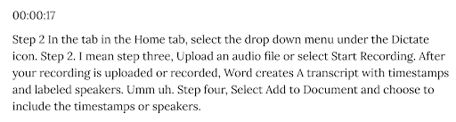
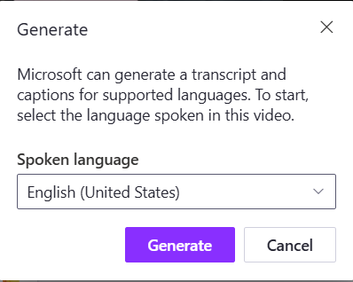

How Do You Edit Transcripts?
This section explains the process of generating and editing transcripts to ensure accuracy and usability. Transcripts created for and from videos can be used to create closed captions or subtitles, which can be key in making videos more accessible to all.
Generating Transcripts
Transcribing audio to text can be done in different ways. The most "low-tech" method is to simply listen to the audio and type it up manually. This can be made easier by software which slows down the audio and provides convenient pause buttons. However, this is still very tedious and may prove to be unsustainable for longer sections of audio.
Another method is by using an automatically generated text-file, which can be created with various programs. However, these have varying levels of accuracy, especially if the audio is not of a single, clear speaker. Background noise, multiple speakers, or specialized terminology may reduce the accuracy of these transcripts. That’s where the important step of editing comes in.
Generating Transcripts with Word
One method of generating transcripts is to use Word’s Dictate feature.
-
Open a new Word document.
-
In the Home tab, select the dropdown menu under the Dictate icon.
-
Upload an audio file, or select Start recording.
After your recording is uploaded or recorded, Word creates a transcript with timestamps and labeled speakers.
-
Select Add to document and choose to include the timestamps or speakers.
Now you have an editable transcript that you can review for accuracy.
Editing Transcripts
Ensuring accuracy is why editing transcripts is a crucial part of accessibility. While starting with an autogenerated transcript is faster than typing it from scratch, you should still plan to spend time editing the generated transcript. Formatting the transcript also matters and may be especially relevant if there are multiple speakers.
Transcripts do not exclusively consist of the spoken word in a video. They may also include additional descriptions or explanations, such as indicating who is speaking, sound effects, or other important information that impaired users may need to know.
To edit transcripts, you should remove filler words or repetitions. The example below shows the difference between a transcript that was automatically generated using Word and the same transcript edited to remove filler words, repetitions, and fix autogeneration errors.
Auto-generated, unedited transcript:

Edited transcript:

Ideally, your content should already use integrated descriptions, which is part of creating accessible media. You can learn more about integrated descriptions in the Best Practices section.
It is also helpful to keep timestamps within the transcript, as used in interactive transcripts. While this isn’t necessary and may not work for some content, timestamps makes it easier to find specific information in a video.
Exporting Transcripts
Most transcripts online are provided in text based formats, although there is not a set standard. Common formats include plain text files, Microsoft Word documents, or posted on the webpage where the media is hosted. Regardless of the format you choose to use, remember to consider your users’ needs and how you can make your content and transcripts accessible (it is especially important to consider how your content interfaces with accessibility technology, such as screenreaders).
Some platforms have built-in transcript functions where you can upload yours. In general, you should make it easy for users to know that there is a transcript available and where to find it. Including the transcript or a link to it next to or under the video, or in its description, makes it easier for users to find it.